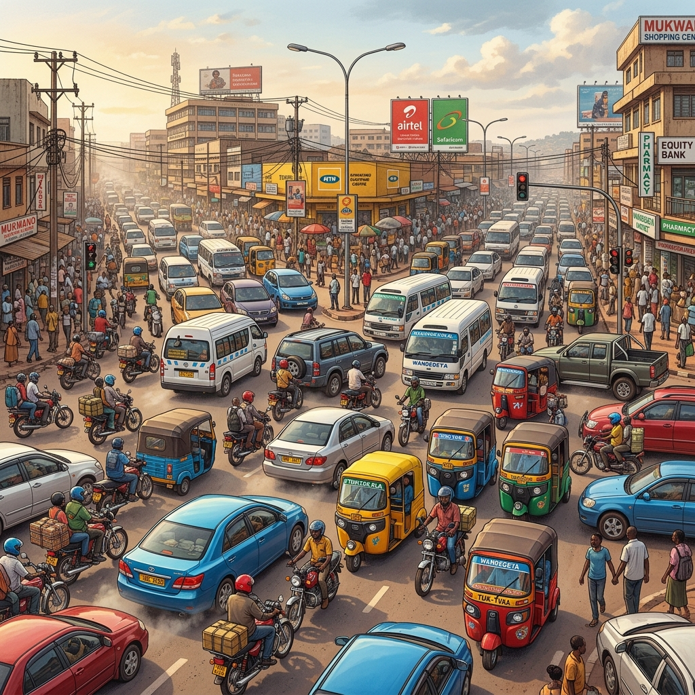
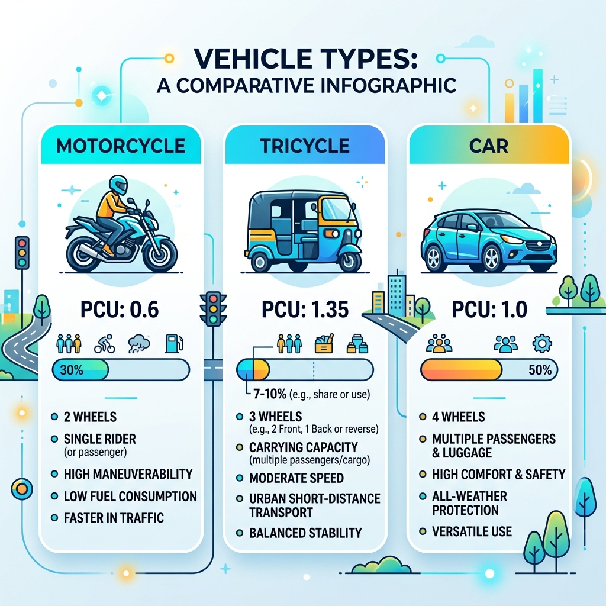
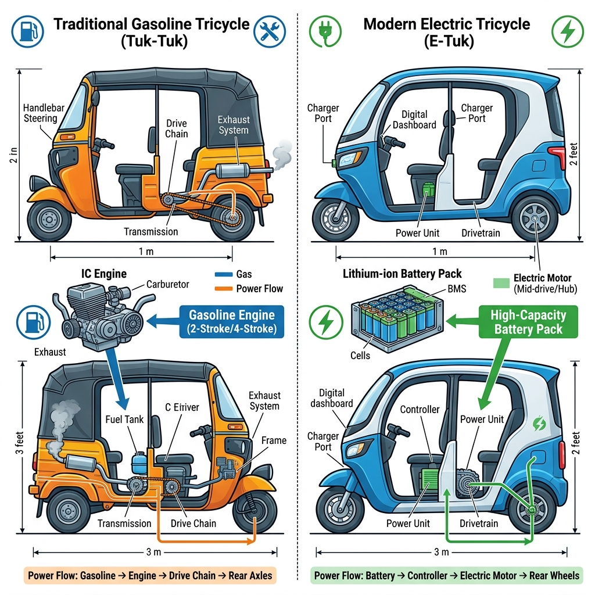

Presented by: SSERUNJOGI AMBROSE
MSc. Transportation Engineering | KIU 2026
Kampala's traffic is a heterogeneous battlefield.
Standard models ignore the Aggressive Weaving of tricycles.
This leads to Signal Cycle Failure at major bottlenecks.

Static PCU = 0.75
Observed PCU = 1.35 - 1.45
Gap: Current engineers rely on foreign data that misses local behavior.
Derive base PCU values using Modified Headway Ratio (Eq. 2).
Quantify impact of V/C ratio and weather on PCU variability.
Calibrate standstill distances and lateral behaviors for simulation.
Embed results into the GKMA MODERATO signal system.

Tricycles (Tuk-tuks) bridge the gap but disrupt flows more than motorcycles.
Student hub. High NMT interaction.
Expressway node. High-speed mix.
Signalized bottleneck.
Flood-prone gateway.
Major transport hub.
Eq 1: Headway (Mixed Stream)
PCU = [(h_mix / h_c) - P_c] / P_T
Eq 2: Modified Headway Ratio
PCU = h_i / h_c

Calibration revealed an 18% drop in intersection capacity when using context-specific PCUs.
Green times currently underestimate tricycle occupancy by 25%.
Standardized, evidence-based PCUs are the key to unlocking Kampala's gridlock.